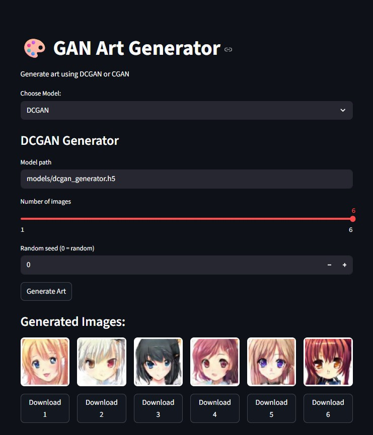
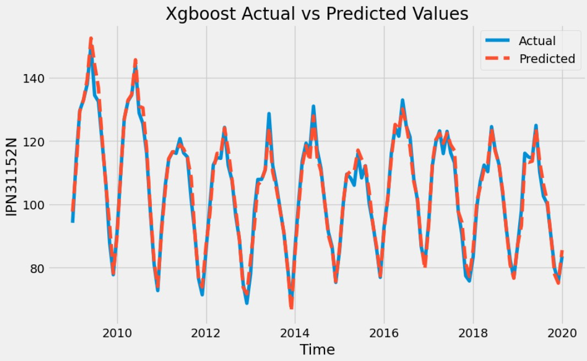

Focus
Real-time detection, medical imaging, visual analysis, and production ML services.
Kaggle Expert · Computer Vision & Machine Learning Engineer
B.Sc. Computer Engineering · Mansoura University | Software Engineer @ TJM Labs
I build and deploy computer vision and ML systems — real-time object detection, medical image analysis, and visual pipelines — mainly with Python, PyTorch, and OpenCV.
At TJM Labs I work on AI agents and APIs that automate pharmacy workflows such as prescription intake and fax processing. Outside work I take projects from training to deployed services with FastAPI, Flask, and Docker.
I graduated with a B.Sc. in Computer Engineering from Mansoura University (94.08%, ranked 6th of 255, Excellent with Honors). My strongest work is in detection, medical imaging, and deploying models behind APIs.
At TJM Labs I build AI agents and backend services for US pharmacy systems — prescription intake, fax processing, and demographic updates. My graduation project, MathEditor, included OCR for math expressions to LaTeX and LLM-assisted document tools. I am preparing for a research Master’s in 2027.
Mentored research training and collaborative paper work in computer vision and AI for healthcare.
Under Dr. Mohamed Sameer Abdallah, PhD, PMP® · Assistant Professor, Gachon University, South Korea
Completed a 5-month research training period focused on how to read papers carefully, assist in research discussions, and practice the process of writing research papers in computer vision.
With Dr. Tahir Abbas Khan (SMIEEE) · Assistant Professor, Muhammad Nawaz Sharif University of Engineering & Technology (MNSUET), Multan
Title: A Hierarchical Agentic Framework for Cardiovascular Triage: Design, Evaluation, and the Discovery of a Confidence–Severity Escalation Gap
Collaborative manuscript on an agentic, multi-stage cardiovascular triage pipeline (tabular risk screening → echocardiographic EF confirmation → MRI escalation), with confidence-based routing, ablations, and explainability/audit analysis. Status: under review.
Building AI agents and backend APIs for US pharmacy workflows — prescription intake, fax processing, and demographic updates — wired into existing production systems.
Selected CV and ML projects with training, evaluation, and deployable demos.
Advanced match analysis using YOLO, deep learning, and real-time video analytics: player detection, ball tracking, court keypoints, and annotated performance statistics.
GitHub ↗Fine-tuned ResNet18 for MRI classification with FastAPI backend, Streamlit frontend, and Docker packaging. Reported 99.7% accuracy and earned a Kaggle gold medal.
GitHub ↗AI-powered plate detection with YOLOv11 and PaddleOCR, including a Flask interface and MySQL persistence for reads from video streams.
GitHub ↗Real-time activity recognition that classifies sitting and standing poses with YOLOv8 pose estimation and OpenCV video processing.
GitHub ↗Smart retail detection pipeline with YOLOv11 for snack recognition, plus real-time price, expiry, and calorie analysis for automation workflows.
GitHub ↗TensorFlow / VGG16 image classifier at 98.7% accuracy, with FastAPI, Streamlit, Docker packaging, and a Kaggle gold-medal notebook.
GitHub ↗
DCGAN and CGAN models for anime face generation, with an interactive Streamlit app, controllable attributes, batch generation, and training notebooks.
GitHub ↗Reservation cancellation predictor at 97.2% accuracy, shipped with FastAPI, Streamlit, and Docker for revenue-oriented decision support.
GitHub ↗RFM analysis and K-means segmentation with an interactive Plotly Dash dashboard for turning e-commerce data into actionable customer groups.
GitHub ↗
Compared ARIMA, SARIMA, XGBoost, LSTM, and GRU on monthly sales data with preprocessing, feature engineering, and model performance analysis.
GitHub ↗End-to-end price prediction with Random Forest, XGBoost, and CatBoost ensembles, feature engineering, and evaluation around ~91% R².
GitHub ↗Collection of realtime vision demos: gesture recognition, facial recognition, object detection, lane detection, and CNN image classification.
GitHub ↗Classical machine-learning algorithms implemented from first principles to keep theory tightly connected to code.
GitHub ↗Formal training programs and certificates from my CV.
Certificate
Completed 8 data science projects covering machine learning, time series analysis, and statistical modeling. Built predictive models with Linear Regression, ARMA, Logistic Regression, Random Forest, and GARCH, plus interactive dashboards with Python, Plotly Dash, and custom APIs.
Rank · Competition Medals
Kaggle Expert with multiple Gold medals (Cats vs Dogs, Brain Tumor Classification, Time Series Ice Cream Sales) and Silver medals (Customer Segmentation, Hotel Cancellation Predictor, Laptop Price Predictor).
Certificate
Completed 5 advanced CV projects including tampering detection, image watermarking, text extraction, face swapping, and handwritten digit recognition. Used TensorFlow and PyTorch with data augmentation, feature extraction, and transfer learning.
Certificate
Hands-on experience with AI platforms focused on data processing, model training, and evaluation. Designed AI-based solutions using neural networks and optimization techniques.
Bachelor's Degree
Mansoura University, Egypt
Excellent with Honors
94.08% · Ranked 6th / 255
≈ 3.8 / 4.00 equivalent
Reach me on Kaggle, LinkedIn, GitHub, or email.